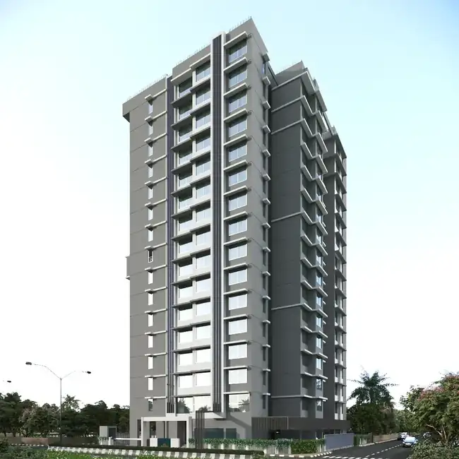
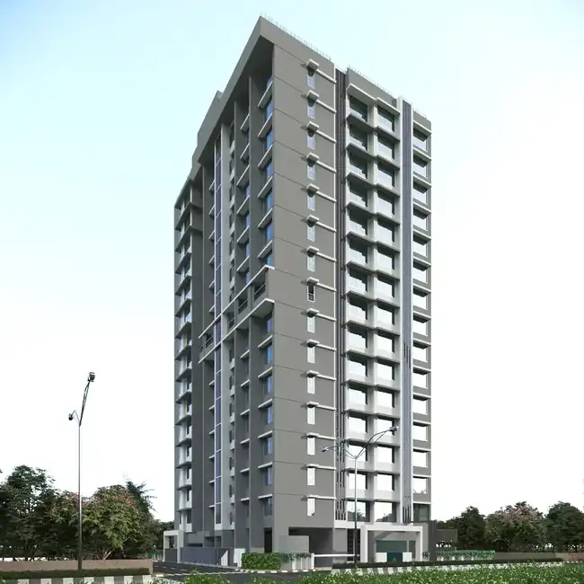
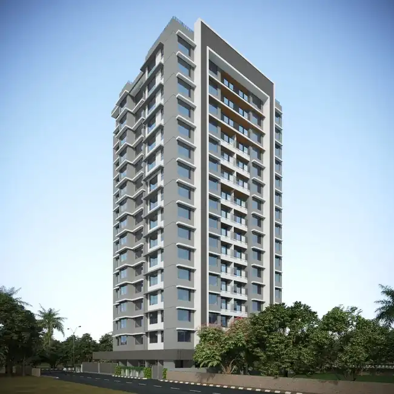
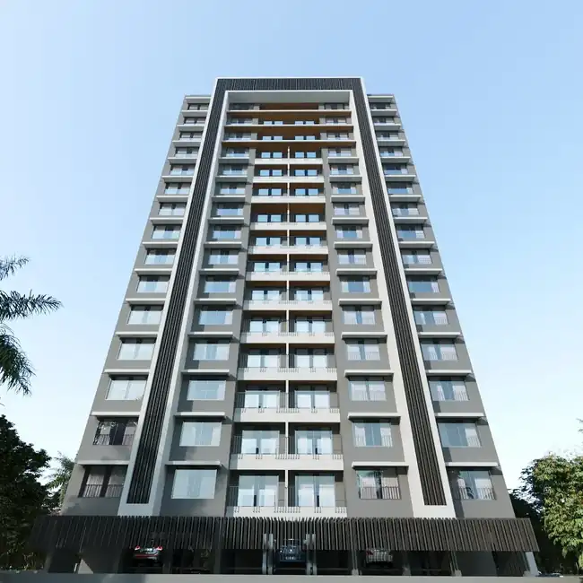

ARCHITECTURE / RESIDENTIAL
Plot B
A residential building study focused on vertical articulation, repeated openings, projecting frames and the relationship between facade rhythm and a landscaped edge.

ARCHITECTURAL DIRECTION
Visual reading of the supplied architectural references.
A residential building study focused on vertical articulation, repeated openings, projecting frames and the relationship between facade rhythm and a landscaped edge.
Project information is intentionally limited to what can be read from the supplied imagery.


